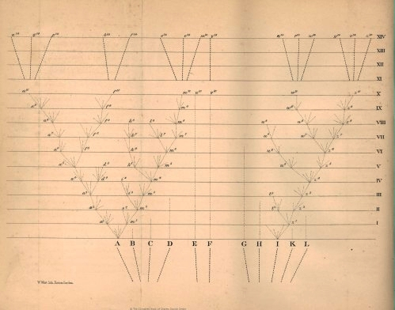
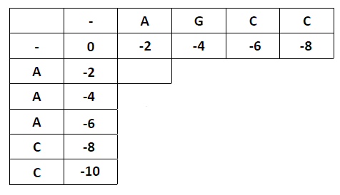
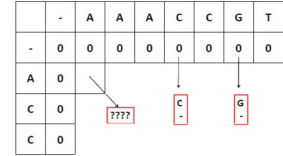
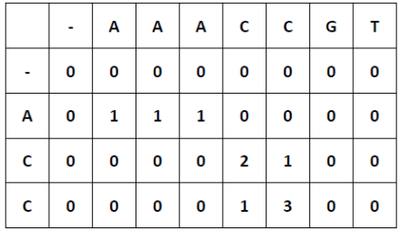
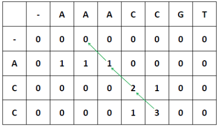
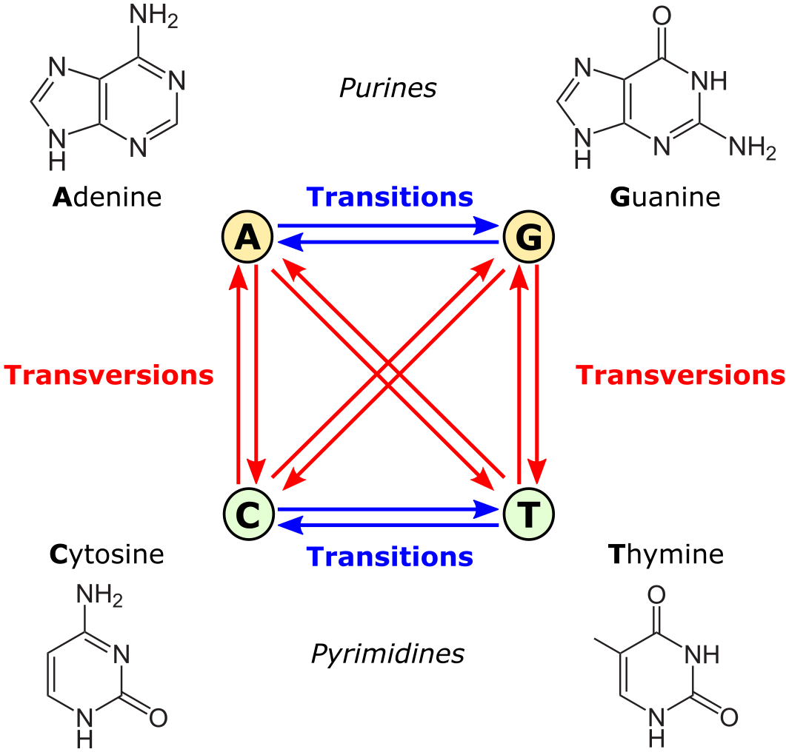

Similitud genética y árboles filogenéticos#
En el centro de la biología esta la búsqueda de similitudes entre las diferentes formas de vida y la representación de estas variaciones. Los árboles filogenéticos son una representación muy útil de estas diferencias
La idea de una descendencia con modificiaciones de Darwin implica que las similitudes existen entre orgnaismos porque ellos comparten un ancestro común. Es decir que las similitudes se pueden utilizar para hacer inferencias filogenéticas sobre las relaciones evolutivas entre organismos. Por lo tanto, un árbol filogenético es una hipótesis sobre relaciones ancestrales. A los caracteres similares que comparten un ancestro común se les llama “caracteres homologos”. Pero no todas las similitudes son homólogas.

Tradicionalmente los árboles filogenéticos se construyen con caracteres fenotípicos, y estos continúan siendo importantes para muchos rasgos morfológicos, ecológicos, de comportamiento y para datos fósiles. Sin embargo actualmente muchos árboles filogenéticos se construyen utilizando secuencias de nucelótidos y aminoácidos. Aquí entonces tenemos similitud entre secuencias que pueden, pero no necesariamente reflejan la similitud entre las especies.
Similitud entre secuencias#
Dadas tres secuencias:
ACGTG
ACGTC
ACGCC
Como sería la hipótesis de relación ancestral entre estas secuencias?
Entramos a Apolo y activamos los ambientes
ssh lsalazarj@apolo.eafit.edu.co
source activate biopython_py3.9
python
import Bio
from Bio.Seq import Seq
seq1=Seq("ACGTG")
seq2=Seq("ACGTC")
seq3=Seq("ACGCC")
Alineamiento por pares#
Dos secuencias, seq1 y seq2, en qué se parecen y diferencian? Como cuantificar las diferencias y similitudes?
from Bio import Align
aligner = Align.PairwiseAligner() #alineamiento por pares
alignments = aligner.align(seq1, seq2)
for alignment in sorted(alignments):
print("Score = %.1f:" % alignment.score)
print(alignment)
+Cuantos tipos de alineamientos encontró? Cual es mejor?
Opción1 Sustitución seq1 A A C G T G | | | | | . seq2 A A C G T C
Opción2 Indel seq1 A A C G T G - | | | | | - - seq2 A A C G T - C
Match (pareados): 5 Mismatch (no pareados): -1 Indel: -1
“Score”: 5-1 = 4
En este caso la penalización de los indel es igual a mismatch, el score es el mismo. Normalmente los indel se penalizan mas
Alineamiento Global: algoritmo Needleman–Wunsch#
Fue uno de los primeros algoritmos usados para decidir el mejor alineamiento de una secuencia completa. Funciona asignándole un score a cada uno de los posibles alineamientos, y escogiendo el que tenga el mayor valor.
Ejemplo: seq1=AGCC seq2=AAACC
Scores gap=-2 mismatch=-1 match=1
Para entender el algoritmo vamos a empezar con una matriz que tiene una secuencia en cada eje
La idea es calcular cada uno de los cuadros, lo cual corresponde a todas las posibilidades de alineamiento en cada posición, y atribuirle un valor para entender cual es la mejor solución. Para cualquier posición i y j,pueden pasar 3 cosas: (i) i y j están alienados; (ii) i está alineado con un gap en la secuencia 2; o (iii) j está alineado con un gap en la secuencia 1. El score posible mas alto en la posición H(i, j) está definido por la siguiente regla:
H(i,j) = Max H(i - 1, j - 1) + Sij (diagonal)
H(i, j - 1) + g (horizontal)
H(i-1, j) + g (vertical)
En nuestro caso la penalidad por sustitución es S=-1 y por gap=-2

Los pasos del algoritmo son los siguientes
Defina H(0,0) = 0 y dele a todos los campos el producto de la posición por el valor del gap
Llene los valores de H matrix usando la regla y empezando desde H(1,1). Para calcular el valor de H(1,1), seleccione el máximo de tres opciones: i. Si tomamos un paso de la diagonaldonde el valor es 0, los dos nucleótidos (A) estarían alineados. El valor sería 0+1 = 1 ii. Si tomamos un paso horizontal, vendríamos desde H(1,0) donde el valor es 0, y se adiciona el valor del gap entonces el score sería 0 - 2 = -2. iii. Si tomamos un paso vertical, vendríamos desde H(0,1) donde el valor es -2, y se adiciona el valor del gap entonces el score sería 0 - 2 = -2. Escoja el mayor de estos valores y dibuje una flecha para señalar la ruta. Continuamos hacia H(1,2), donde las opciones son:
Llene sucesivamente los valores del matriz
Note que en algunos campos los pasos de la diagonal, horizontal producen el mismo score mas alto. En estos casos, hay mas de una posibilidad de alineamientos óptimos y se deben tener en cuenta estas rutas. 4. Finalmente, reconstruimos el alineamiento usando la ruta inversa en la matriz, comenzamos en la esquina inferior derecha. Una flecha en diagonal significa un match entre secuencias. Una flecha hacia arriba o a la derecha significa introducir un gap horizontal o vertical, respectivamente.
En este caso tenemos 3 posibilidadescon igual score: Score=31 + 1(-1)+(-2)= 0
A) _ A G C C A A A C C
B) A _ G C C A A A C C
C) A G _ C C A A A C C
Vamos a chequear este mismo alineamiento en python
from Bio import Align
aligner = Align.PairwiseAligner()
# Definimos las secuencias a alinear
seq1=Seq("AGCC")
seq2=Seq("AAACC")
# Le asignamos los scores
aligner.match_score = 1
aligner.mismatch_score = -1
aligner.open_gap_score = -2
# Alineamos
alignments = aligner.align(seq1, seq2)
for alignment in sorted(alignments):
print("Score = %.1f:" % alignment.score)
print(alignment)
Alineamiento Local: Smith-Waterman#
Con frecuencia las secuencias contienen diferentes longitudes, pero dominios que son conservados porque son importantes para ciertas funciones. Los alineamientos locales sirven para identificar sub-regiones similares. Smith & Waterman desarrollaron un algoritmo dinámico local que se parece al de Needleman-Wunsch, excepto que se dibuja una flecha solo si el valor es positivo. Si el máximo posible es negativo, se le asigna un 0 y no se dibuja ninguna
Ejemplo: seq1 : ACC seq2: AAACCGT
Scores gap=-2 mismatch=-1 match=1
El procedimiento inverso para alineaientos locales comienza con el score mas alto y sigue la ruta en reversa hasta el campo que contenga un 0 y para. La celda con el H mas alto no tiene que estar en la esquina inferior derech[porque aquí se busca el sub-alineamiento más óptimo, el cual puede estar en el medio
Matrices de sustitución#
Desde un punto de vista fisico-químico, no todas las sustituciones son igualmente probables. En el caso de los nucleótidos, las transiciones (A-G, T-C) son mas frecuentes que las transversiones (A↔C, A↔T, C↔G, and G↔T).
En el caso de los amino ácidos, existen sesgos al nivel de mutacions o de selección natural que hacen algunas sustitutciones mas probable que otras. Primero, algunos amino ácidos tienen mas probabilidad de mutar a otros porque sus codone son mas similares en código genético. Segundo. algunas sutituciones se fijan mejor durante la evolución porque los amino ácidos comparten propiedades fisico-químicas similares. Estas diferencias tratan de reflejarse en las matrices de sustitutción

Alineamientos múltiples#
Con frecuencia estamos interesados en comparar mas de dos secuencias. Los alineamiento múltiples contienen mas información sobre sitios conservados que pueden ser mas fácil de identificar. Al mismo tiempo son computacionalmente mucho mas complejos y el tiempo computación incrementa exponencialmente. La aproximación mas usada es alinear fragmentos por similitud, y progresivamente construir alineamientos locales por pares, tomando primero las mas similares, formando “clusters jerárquicos”.
Vamos a tomar las secuencias de proteínas descargadas previamente de NCBI y a alinearlas utilizando uno de los programas, entre (muchos)[https://www.ebi.ac.uk/Tools/msa/] de alineamiento: (ClustalW)[https://www.ebi.ac.uk/Tools/msa/clustalo/].
Una vez copiados estos archivos en el directorio de Apolo, entramos a nuestra cuenta y creamos un ambiente para instalar clustal
ssh lsalazarj@apolo.eafit.edu.co
conda create -n clustalw
conda activate clustalw
conda install -c bioconda clustalw
A conitnuación vamos a “juntar” (concatenar) las secuencias de la espícula de los tres hospederos en un solo archivo
cat camel.fa pangolin.fa bat.fa > spike.fa
El comando para correr clustalw es el siguiente (recordemos que en Apolo este comando hay que escribirlo dentro de un script slurm.sh):
clustalw2 -infile=spike.fa -type=protein
Este comando produce varios archivos un archivo spike.aln que contiene el alineamiento. Inspecciónelo
Descargue la secuencia de amino ácidos del coronavirus de humano (ej. UOP57234)
Cree un alineamiento con los hospederos previos e incluyendo esta secuencia
Suba el alineamiento (.aln) y el output de slurm (.out)